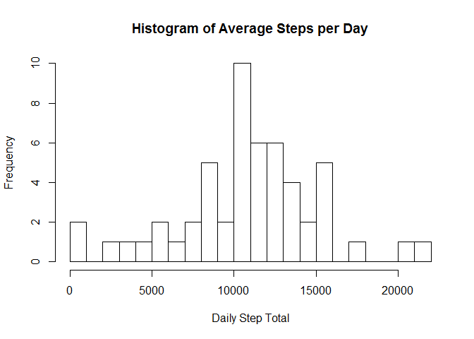
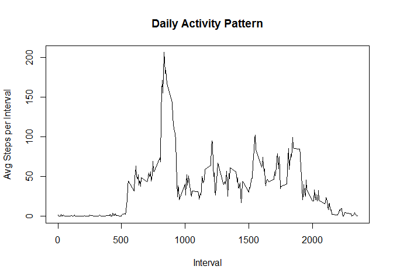
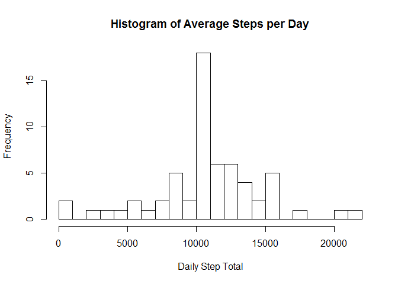
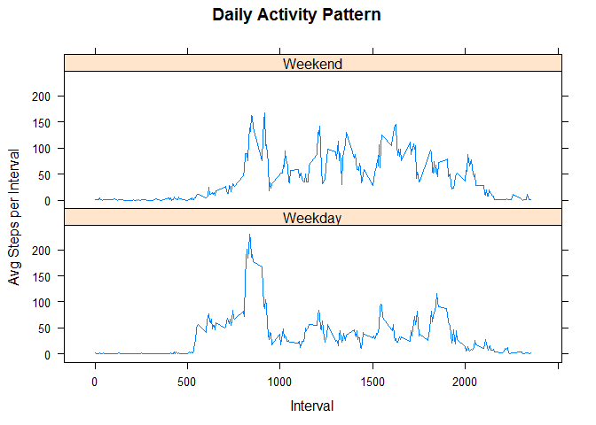

library("dplyr")##
## Attaching package: 'dplyr'
##
## The following object is masked from 'package:stats':
##
## filter
##
## The following objects are masked from 'package:base':
##
## intersect, setdiff, setequal, unionlibrary("lattice")Read into data table:
fit_table<-read.csv(unz("activity.zip","activity.csv"))Strategy: use aggregate() to compute a data frame of sums by day, then use this data for the histogram plot and average/median computations.
## total_steps contains the total number of steps taken each day
## (summed across all 5 min time intervals)
## sum up all observations for each day, ignoring NA values
total_steps <- aggregate(fit_table$steps,by=list(fit_table$date),sum)
## create a histogram showing the frequency distribution of
## daily step totals
hist(total_steps$x, breaks=20, main="Histogram of Average Steps per Day",
xlab="Daily Step Total")
## compute and display the arithmetic average of daily step totals
cat("Average Daily Step Total: ", mean(total_steps$x,na.rm=TRUE))## Average Daily Step Total: 10766.19## compute and display the median daily step total
cat("Median Daily Step Total: ", median(total_steps$x,na.rm=TRUE))## Median Daily Step Total: 10765Strategy: Use aggregate() to compute a data frame of means by interval, then plot this data.
## steps_by_interval contains the average number of steps in each time
## interval across the 61 days in the data
## average steps in a given time interval across all days in the data set,
## ignoring NA values
steps_by_interval <- aggregate(fit_table$steps,by=list(fit_table$interval),
mean, na.rm=TRUE)
plot(steps_by_interval$Group.1, steps_by_interval$x,type="l", xlab="Interval",
ylab="Avg Steps per Interval", main="Daily Activity Pattern")
## compute maximum average steps by interval and output both number and interval
max_int <- max(steps_by_interval$x)
max_time <- steps_by_interval[steps_by_interval$x==max_int,]
cat("maximum steps per interval is ", max_int,
" recorded in interval ", as.integer(max_time[1,1]))## maximum steps per interval is 206.1698 recorded in interval 835Strategy: Use the average steps in each interval as the imputed value for each NA in the same interval.
## calculate number of missing values
missing_data <- is.na(fit_table$steps)
cat("number of missing values", sum(missing_data))## number of missing values 2304## use dplyr to manipulate data when imputing missing values
## create new table that contains original data plus interval means
int1<- tbl_df(left_join(fit_table,
as_data_frame(list(interval=steps_by_interval$Group.1,
mean_steps=steps_by_interval$x))))## Joining by: "interval"## add variable with imputed steps
## step one -- replace NA with zero
steps_z<-fit_table$steps
steps_z[is.na(steps_z)]<-0
## step 2 add imputed steps as steps_i variable to table
int2<-mutate(int1, steps_i=steps_z+mean_steps*missing_data)
## create new data frame identical to original except for imputed NAs
new_fit_table <- data.frame(steps=int2$steps_i,date=int2$date,
interval=int2$interval)
##compute new total steps
total_steps2 <- aggregate(new_fit_table$steps,by=list(new_fit_table$date),sum)
## create a histogram showing the frequency distribution of
## daily step totals
hist(total_steps2$x, breaks=20, main="Histogram of Average Steps per Day",
xlab="Daily Step Total")
## compute and display the arithmetic average of daily step totals
cat("Average Daily Step Total: ", mean(total_steps2$x))## Average Daily Step Total: 10766.19## compute and display the median daily step total
cat("Median Daily Step Total: ", median(total_steps2$x))## Median Daily Step Total: 10766.19NAs were replaced with mean for that time interval over the entire data set. The NAs were all clustered such that there were 8 days with only NAs and no NAs outside of those 8 days. The effect of this strategy of filling in NAs was to remove 8 days of zero steps and add 8 days with a total step count equal to the sum of the means by interval (which, by construction is the same as the mean of the non-missing days). Thus there was no change to the mean. Since the 8 days were a large proportion of the data (8/61) and were clustered in the middle of the data, the sum of the interval means became the median daily total.
Strategy: create a function to return “Weekday” and “Weekend” as appropriate
Lattice library used for panel plot
## function to be called in next step
wkend<-function(dotw){
if(dotw=="Sat" | dotw=="Sun") wkend<-"Weekend" else wkend<-"Weekday"
wkend
}
## add a column to the data frame with the factor Weekday/Weekend
int1<-mutate(new_fit_table,wkfac=sapply(weekdays(strptime(new_fit_table$date,
format="%Y-%m-%d"), abbreviate=TRUE),wkend))
## average steps in a given time interval across all days in the data set,
## separately for weekdays and weekends
steps_by_interval2 <- aggregate(int1$steps,by=list(int1$wkfac, int1$interval),
mean)
## use attach to so I can refer to just the elements of steps_by_interval2
attach(steps_by_interval2)
## panel plot using Lattice
xyplot(x~Group.2|Group.1,type="l",xlab="Interval",
ylab="Avg Steps per Interval", main="Daily Activity Pattern",
layout=c(1,2),scales=list(y=list(alternating=FALSE)))